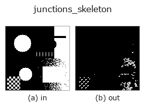

region op• 資料種類:region → region
• 呼叫:fullseye.apply(img, "junctions_skeleton", a=0.5, b=0.5)(2-D 的模型是一張圖 + 兩個純量旋鈕 a,b∈[0,1])
• HALCON 對應:junctions_skeleton(其含義與參數可參考 HALCON 手冊)

*圖為在 128×128 合成輸入上實際執行的輸出。左為輸入，右為輸出。點雲以俯視散點顯示(亮度 = z)，一維序列為折線，體資料為沿 z 的最大值投影，影片為中間影格，複數影像為振幅；無法成像的回傳值直接顯示數值。*
*旋鈕 a 不改變輸出(實測: 0.1 / 0.5 / 0.9 相同)。*
*旋鈕 b 不改變輸出(實測: 0.1 / 0.5 / 0.9 相同)。*
階段(前置運算子 → 本運算子，由左至右):
▸ junctions_skeleton: stages (docs site)
換別的影像(合成場景 / 照片 / 硬幣。上排為輸入，下排為對應輸出。旋鈕取預設):
▸ junctions_skeleton: other inputs (docs site)
在骨架化後的區域中，只保留在 3x3 鄰域內擁有 3 個以上骨架像素的像素（分支點／交叉點）。偵測的是產生分支的節點，而非骨架端點（`pruning 所刪除的對象）。相當於 HALCON 的 junctions_skeleton`（Find junctions and end points in a skeleton.）——為一種近似：HALCON 會同時回傳端點，此處僅偵測分支點。
> 以下的詳細說明為原文 —— 摘要與標題已翻譯。
`a, b` は未使用。
• 範例資料目錄(下載 URL / 授權) —— 2-D 用 skimage.data(BSD/公有領域)加合成圖,3-D 給出真實資料源(Stanford/PDS 等)的下載 URL。
• 運算子來歷與參考文獻 —— 該運算子族所依據的研究/方法出處。
• 演算法的正典(作者・年份)與用途見上面的族使用指南。
下面的程式已確認可以執行(與圖相同的輸入)。在 Studio 說明中，此區塊會變成按鈕，可當場載入並執行。
threshold 0.50 0.50 junctions_skeleton 0.50 0.50
▸ Load this pipeline · Load & run
• gallery2d_region — py -3.11 examples/gallery2d_region.py
region 作為輸入)identity · reg_erode · reg_dilate · reg_open · reg_close · fill_holes · select_largest · remove_small
region)reg_erode · reg_dilate · reg_open · reg_close · fill_holes · select_largest · remove_small · invert_region
*Provenance: ops.py — 2D 運算子登記表。本條目由 tools/opdocs.py md 自動產生(請勿手動編輯)。*
© 2026 Kazufumi Furuse — Fullseye operator documentation. Licensed under Apache-2.0.
{kind=link}
{kind=link}